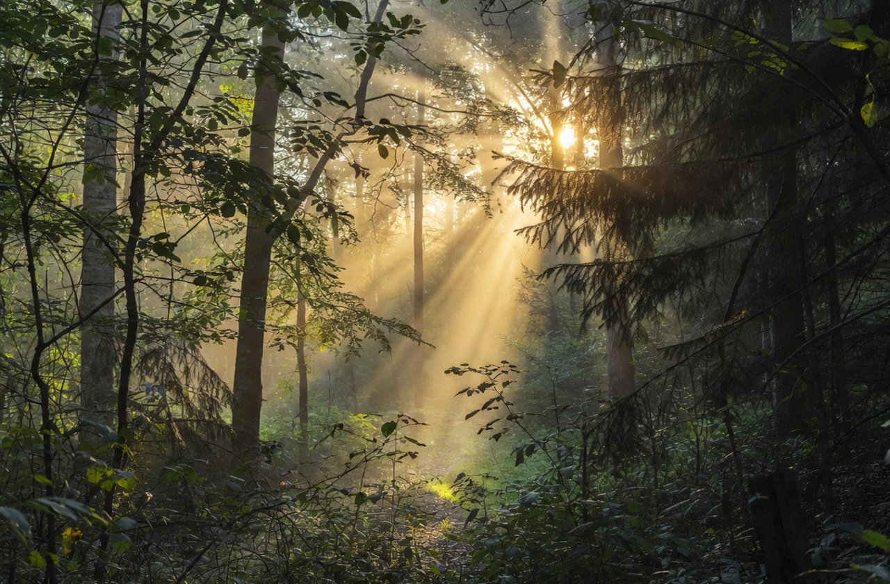
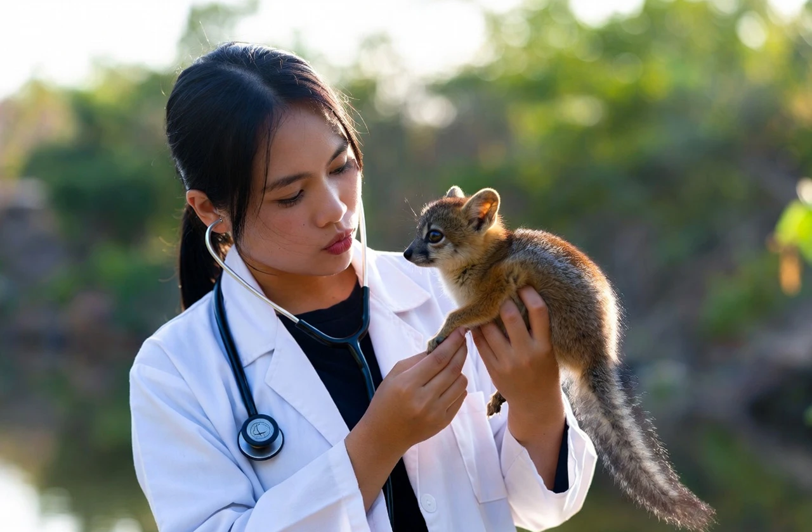
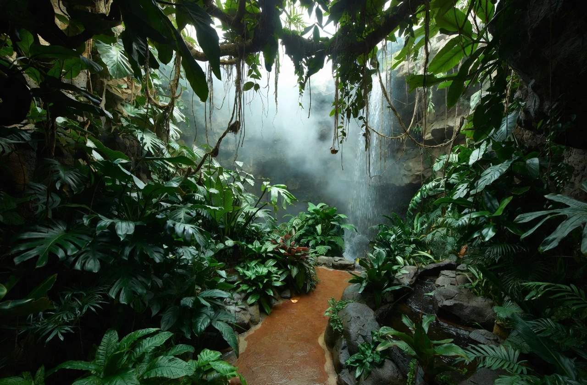

filter_hdr森林的初衷
一切的開端，源於這片森林裡的一道微光。當初我們走進這片群山環抱的林間，看見陽光穿透樹梢灑下斑駁影跡，便感受到生命特有的律動。這裡不應只是地圖上的座標，而是一個能讓萬物呼吸的地方。為了延續自然的純粹，我們遠離喧囂在此紮根。「森光動物園」不只是展示園區，更是我們 與大地簽訂的共生約定，帶領每位訪客找回與自然邂逅的最初感動。

filter_hdr生命的守護
守護生命的承諾，從未在森林中間斷。無論是幼雛的第一口營養補給，還是受傷猛禽重拾凌雲壯志的眼神，每一次救傷與育幼都是深刻的奇蹟。在幕後，醫療團隊與保育員二十四小時待命，在深夜微光中記錄體徵，確保棲所的溫暖與安全。我們深信每條生命都擁有平等的尊嚴，不只醫治傷痛，更致力於野性訓練。這種跨越物種的信任，是「森光動物園」最動人的核心，我們用細膩的愛，期盼看見動物重現自然的活力。

filter_hdr棲地重現
我們打破傳統鐵籠的束縛，致力於還原大自然的原始面貌。我們深知，只有在接近原生的環境中，動物才能展現真實的天性。從翡翠雨林交錯的植被，到草原區開闊的視野，每一處設計都經過嚴謹評估。這裡的草木與溪流，都是為了讓居民能像在家一樣自在。在這裡，人與動物的界線被模糊，遊客不再是觀察者，而是走入自然的拜訪者。那份真實的生態律動，正是我們對於「家園」最深刻的詮釋。

filter_hdr共鳴荒野
教育是一場關於尊重的心靈共鳴。我們致力於將保育種子，播撒在每位訪客心中。透過故事分享，讓大眾理解野生動物面臨的困境，進而產生行動力。未來的我們不只是一座動物園，更會轉型為結合環境教育與野放訓練的基地。我們正努力與國際組織合作，計畫將康復的生命重新送回牠們真正的家——荒野 。這是一段漫長的道路，但我們深信，只要喚起感同身受的共鳴，就能編織出萬物生生不息的未來傳說。